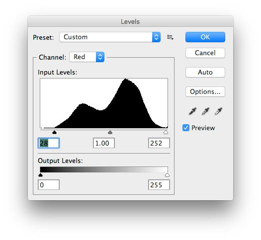
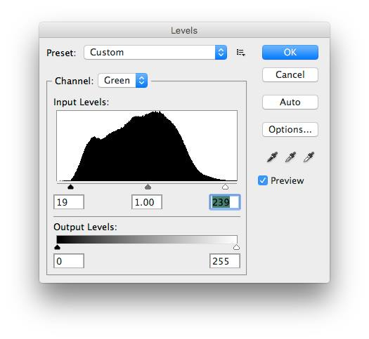
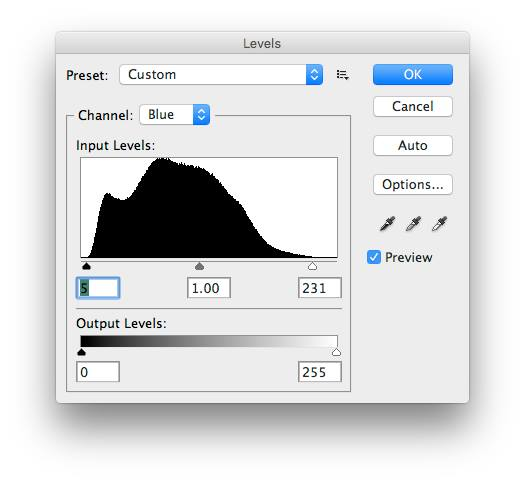
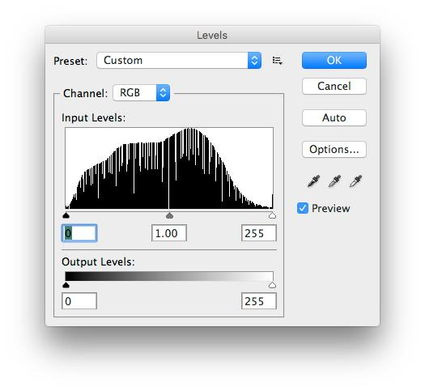

White Balance Correction using Levels in Photoshop.
From Louis Katz
This photo is difficult to balance because of two light sources and a bad exposure. The windows are over exposed ( this might be able to be ignored) and there is both natural light filtered through the windows and florescent light indoors. That is dogzilla.
Original. There are no blacks in this photo and the only whites are in the glare. It is not a great photo but does illustrate how even in the rotten parts of the image (upper left) the colors are improved and more like the original pot.
Open the levels command. Select the red channel. In many circumstances it is better to do this as an adjustment layer but for simplicity I am doing this here.
Move the black slider up to the start of the histogram. And the white slider down until the start of the lights. Very thin lines at the bottom of the histogram are normally noise. This is not always true.

Do the same for the green channel.

Then do it for the blue channel.

In a good photo that has a well spread histogram ( enough but not too much contrast) you will see a very slight loss of color spread.If the original phot is very narrow in value you may see some posterization. A more contrasty original will help. I have noticed some improvement if the color resolution is turned up to sixteen bits and then turned down afterwards but this is very subtle and only helps with rotten exposures.

balanced. It looks more like the original and without a color cast.
All photos are inaccurate.


{kind=link}
{kind=link}
{kind=link}
{kind=link}